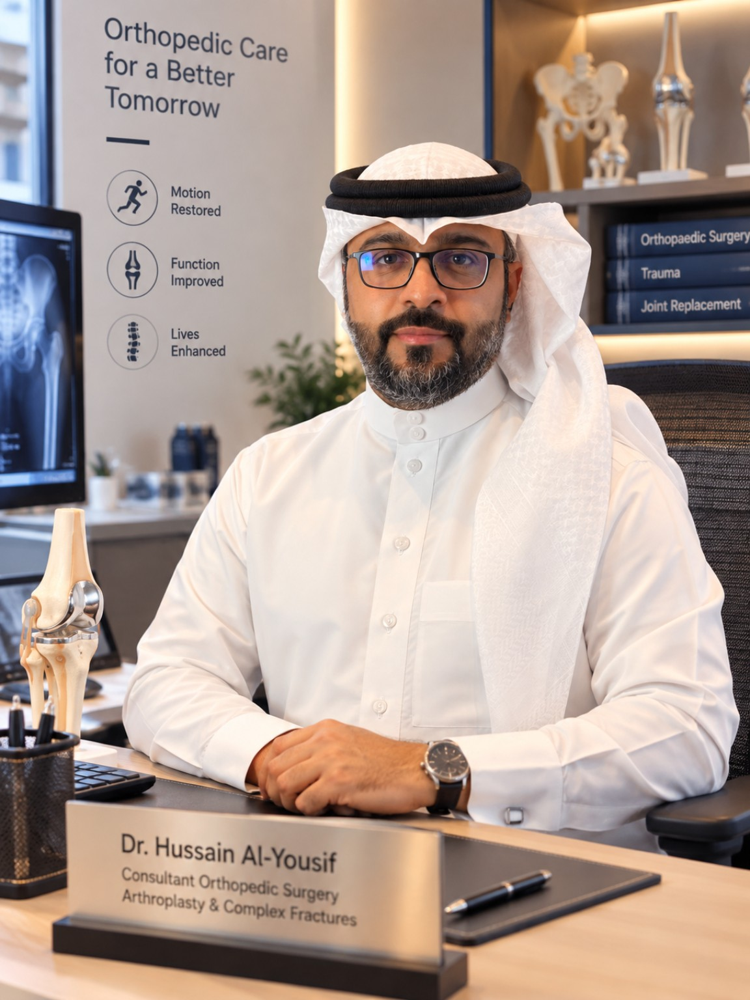
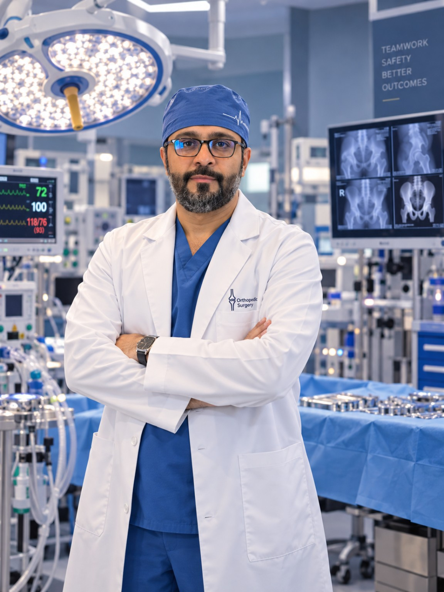
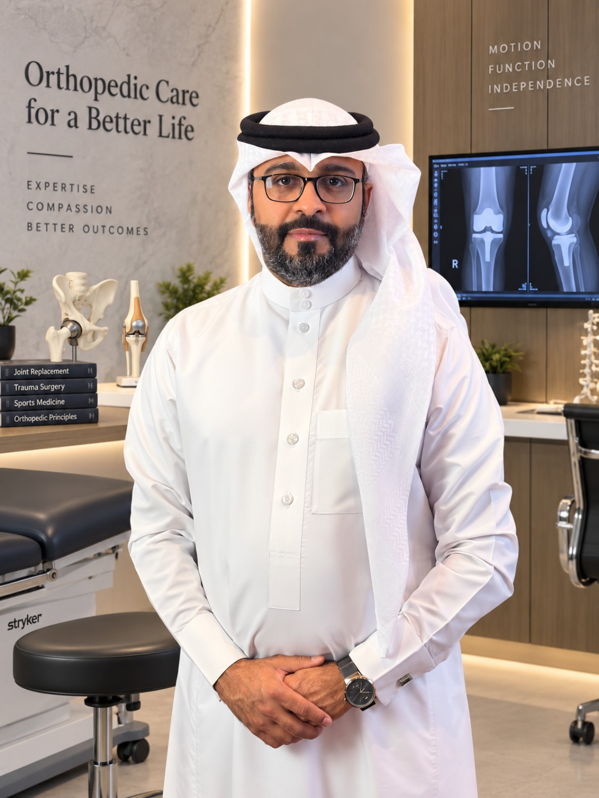

مؤهلات وخبرات عالمية
تدريب وزمالات كندية متخصصة في جراحات مفاصل الورك والركبة والكسور المعقدة.
رعاية متخصصة لخشونة مفاصل الركبة والورك، وكسور الحوض والحُق، والكسور المعقدة ومضاعفاتها.

من العلاج التحفظي والتمارين والحقن في الحالات المختارة إلى استبدال المفصل عند الحاجة.
اعرف أكثر ↖ 02تقييم مصدر الألم وخيارات الحفاظ على المفصل أو استبداله بحسب الحالة.
اعرف أكثر ↖ 03تشخيص سريري، برنامج تقوية وحركة، وتدرج آمن للعودة للنشاط.
اقرأ المزيد ↖ 04تقييم الإصابات المعقدة ووضع خطة دقيقة بحسب الاستقرار والتطابق المفصلي.
اعرف أكثر ↖ 05الكسور متعددة الأجزاء والحالات التي تحتاج تثبيتًا أو ترميمًا متقدمًا.
افتح الدليل ↖ 06عدم الالتئام، سوء الالتئام، فشل التثبيت، وتقييم إزالة الشرائح والمسامير.
افتح الدليل ↖
تدريب وزمالات كندية متخصصة في جراحات مفاصل الورك والركبة والكسور المعقدة.
خبرة تجمع بين ترميم الكسور والمحافظة على المفصل أو استبداله عند الحاجة، للوصول إلى أفضل وظيفة وحركة ممكنة.
توظيف التقنيات الحديثة عندما تضيف قيمة فعلية للدقة والأمان والنتيجة المتوقعة.
التدرج من الخيارات التحفظية والعلاج الطبيعي والتأهيل إلى الجراحة فقط عندما تكون الخيار الأفضل.
نشرح الخيارات الجراحية والفوائد والمخاطر بوضوح، ثم نتخذ القرار المناسب مع المريض.
رحلة المريض العلاجية لا تنتهي بإجراء العملية الجراحية؛ بل يواصل فريقنا معه مراحل التأهيل والتعافي لدعم التعافي والمتابعة بصورة منظمة.

تجربة مهنية تجمع بين الممارسة الجراحية للحالات المعقدة، وبناء برامج تدريب الجراحين، وقيادة غرف العمليات والخدمات الجراحية؛ بهدف تحويل المعرفة والخبرة إلى رعاية أكثر دقة وتنظيمًا للمريض.
في جراحات المفاصل، وكسور الحوض والحُق، والكسور المعقدة وإعادة البناء.
مؤسس أول برنامج زمالة بوزارة الصحة في جراحة الكسور المعقدة، ومشارك في التعليم والتقييم المهني.
مشاركات كمتحدث في مؤتمرات علمية محلية ودولية، وإسهامات في الأبحاث وتأليف الكتب المتخصصة؛ من بينها المشاركة في كتابة فصل علمي ضمن مرجع AAOS OKU: Hip & Knee الصادر عن الأكاديمية الأمريكية لجراحي العظام.
خبرة في الإدارة الطبية وقيادة العمليات الجراحية، وتطوير الكفاءة التشغيلية وجودة وسلامة الخدمات؛ بما يدعم رعاية أكثر تنظيمًا وأمانًا للمريض.
هذه الخبرة المتكاملة تنعكس على رحلة المريض: تشخيص أوضح، قرار مشترك، اختيار دقيق لتوقيت الجراحة، ومتابعة تمتد إلى التأهيل والتعافي.
تعرّف على منهج الرعاية والخبرة ←اختر منطقة الألم أو ابدأ بدليل العملية. ستجد شرحًا للتشخيص والعلاج والتأهيل والأسئلة التي تستحق أن تناقشها في العيادة.
جهّز نفسك ومنزلك، وافهم تعليمات التعافي والمتابعة.
18 دليلًا متاحًا — اختر القسم المناسب لك.
من فهم الألم إلى قرار العلاج والتأهيل.
من التشخيص والعلاج غير الجراحي إلى تفاصيل استبدال المفصل والتحضير والتأهيل والتعافي، في دليل واحد.
تشخيص سريري، تعديل الحمل، تقوية الركبة والورك، وتدرج العودة للجري والنشاط.
وجود تمزق في الرنين لا يعني أن العملية هي الخطوة الأولى.
العودة للملعب تحتاج ركبة قوية وثابتة… وخطة تأهيل واضحة.
خشونة المفصل واستبداله ونقص التروية.
من التشخيص والعلاج غير الجراحي إلى تفاصيل استبدال المفصل والتحضير والتأهيل والتعافي، في دليل واحد.
اكتشاف المرحلة يساعدنا على اختيار فرصة الحفاظ على المفصل.
الإصابة والتثبيت وإعادة البناء ومضاعفات الالتئام.
مستقر أم غير مستقر؟ علامات الخطر، مبادئ العلاج، التحميل والتأهيل حسب نمط الإصابة.
التطابق المفصلي والاستقرار، الأشعة وCT، متى تكفي المتابعة ومتى تصبح الجراحة مناسبة.
فهم الإصابة ومراحل التثبيت وإعادة البناء وحماية الأنسجة والتأهيل.
بطء وعدم الالتئام وسوء المحور والعدوى وفشل التثبيت: كيف نحدد السبب ونختار العلاج؟
تقييم الألم والعودة التدريجية للحركة.
ألم الأوتار والتعليق والكتل: خيارات واضحة للعلاج.
أسباب الألم الخارجي للمرفق، التشخيص، تعديل الحمل، التمارين المتدرجة والخيارات العلاجية.
ألم جهة الإبهام من الرسغ، التشخيص، تعديل الحمل، الجبيرة والتمارين والحقن.
إصبع يعلق أو يطقطق؟ المشكلة قد تكون في مسار الوتر.
كيف يُشخّص، متى تكفي المراقبة، ومتى نناقش السحب أو الاستئصال الجراحي.
ألم الكعب والقوس وخطة الحركة المناسبة.
ألم الكعب عند الخطوات الأولى، التشخيص، الحذاء والدعامات، وخطة تمارين متدرجة للعودة للنشاط.
انخفاض القوس لا يعني دائمًا مرضًا يحتاج علاجًا.
الاستعداد والتعافي: خطوات لك ولأسرتك.
توضيح أسباب إصابة الركبة بالخشونة وتصنيفها بين النوع الأولي والنوع الثانوي.
شاهد على يوتيوب ↖تقليل الوزن والعلاج الطبيعي كخيار أساسي قبل الجراحة وفي مراحل التأهيل.
شاهد على يوتيوب ↖حوار توعوي حول حماية المفاصل والوقاية من الإجهاد والإصابات خلال موسم الحج.
استمع على يوتيوب ↖يتحدث د. حسين اليوسف عن ارتفاع عدد عمليات اليوم الواحد في مدينة الملك سعود الطبية إلى أكثر من ٥٦٠٠ عملية في عام ٢٠٢٣.
تقرير وكالة الأنباء السعودية عن تجاوز عدد العمليات الجراحية في المدينة ٢٥ ألف عملية خلال عام ٢٠٢٥.
اقرأ الخبر في واس ↖الزيارة الأولى هدفها أن تخرج بصورة أوضح عن حالتك وخياراتك، وليس مجرد توصية عامة.
المعلومات في هذا الموقع للتثقيف ولا تغني عن التقييم الطبي المباشر.